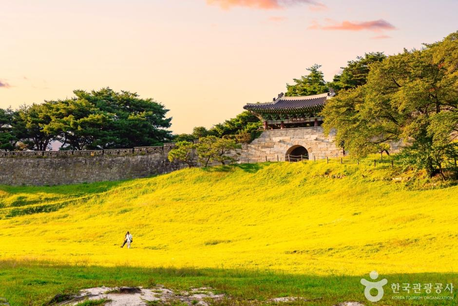

ENFJ 추천 여행지
충청북도 청주

추천 이유
청주는 자연경관과 문화예술 공간을 함께 즐길 수 있는 여행지입니다. 사람들과 의미 있는 시간을 보내는 것을 좋아하는 ENFJ에게 잘 어울리며, 함께 걷고 이야기 나누기 좋은 코스로 구성할 수 있습니다.
추천 여행 코스
- 봉용불고기
- 국립현대미술관 청주
- 상당산성
- 아우트로커피
충청북도 청주

청주는 자연경관과 문화예술 공간을 함께 즐길 수 있는 여행지입니다. 사람들과 의미 있는 시간을 보내는 것을 좋아하는 ENFJ에게 잘 어울리며, 함께 걷고 이야기 나누기 좋은 코스로 구성할 수 있습니다.